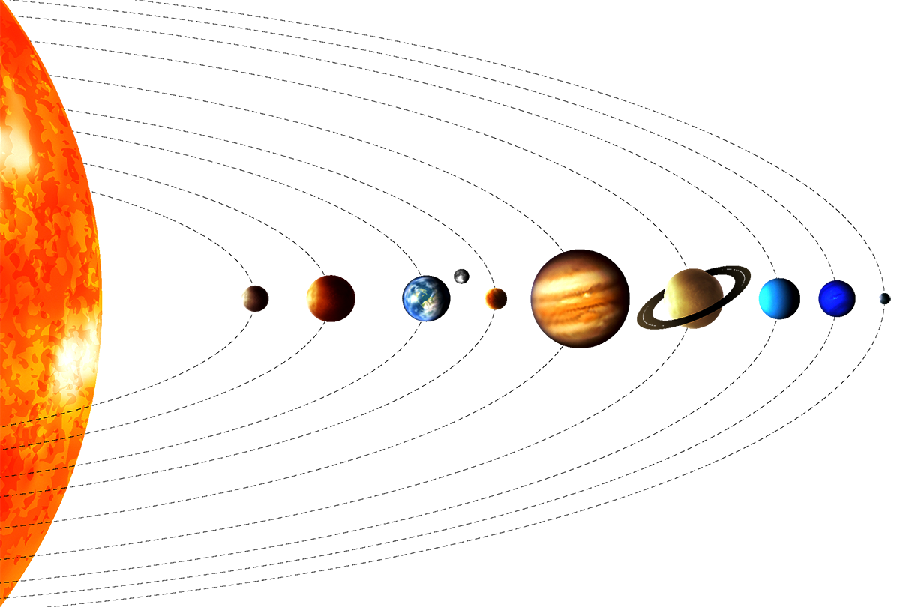

El Sistema Solar es nuestro vecindario cósmico, formado por el Sol en el centro y todo lo que está bajo su influencia gravitatoria, incluyendo los planetas, sus lunas, asteroides, cometas y otros cuerpos menores. El Sol, una estrella de tipo espectral G2V, domina el sistema, proveyendo luz y calor a los cuerpos celestes que lo orbitan, asegurando las condiciones necesarias para la vida en la Tierra.

Sistema Solar
El asombroso hogar de ocho planetas, lunas y otros cuerpos celestes
CARACTERÍSTICAS DEL SISTEMA SOLAR
- El Sistema Solar tiene 8 planetas principales: Mercurio, Venus, Tierra, Marte, Júpiter, Saturno, Urano y Neptuno.
- Además de los planetas, hay planetas enanos como Plutón, Eris y Ceres, y un cinturón de asteroides entre Marte y Júpiter.
- El diámetro del Sistema Solar es de aproximadamente 1 año luz.
- El Sol contiene aproximadamente el 99.86% de la masa total del Sistema Solar.
- Los planetas terrestres son rocosos, mientras que los planetas gigantes y gigantes de hielo están compuestos de gases y hielos.
- El cinturón de Kuiper y la nube de Oort contienen cuerpos helados y cometas en los confines del sistema.
CURIOSIDADES DEL SISTEMA SOLAR
- Júpiter es el planeta más grande con un diámetro de alrededor de 143,000 km.
- Agua fuera de la Tierra: Hay indicios de océanos en las lunas de Júpiter y Saturno.
- El Sistema Solar se mueve a través de la Vía Láctea a una velocidad de 828,000 km/h.
- Los anillos de Saturno son los más espectaculares del sistema.
- El cinturón de asteroides está entre Marte y Júpiter, pero los asteroides están muy separados.